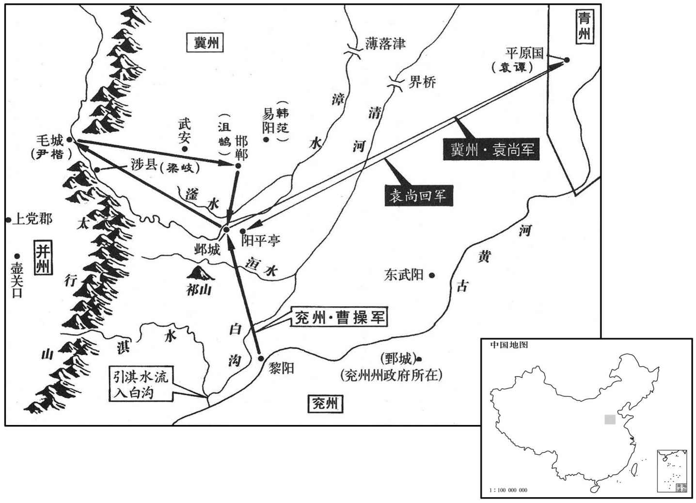
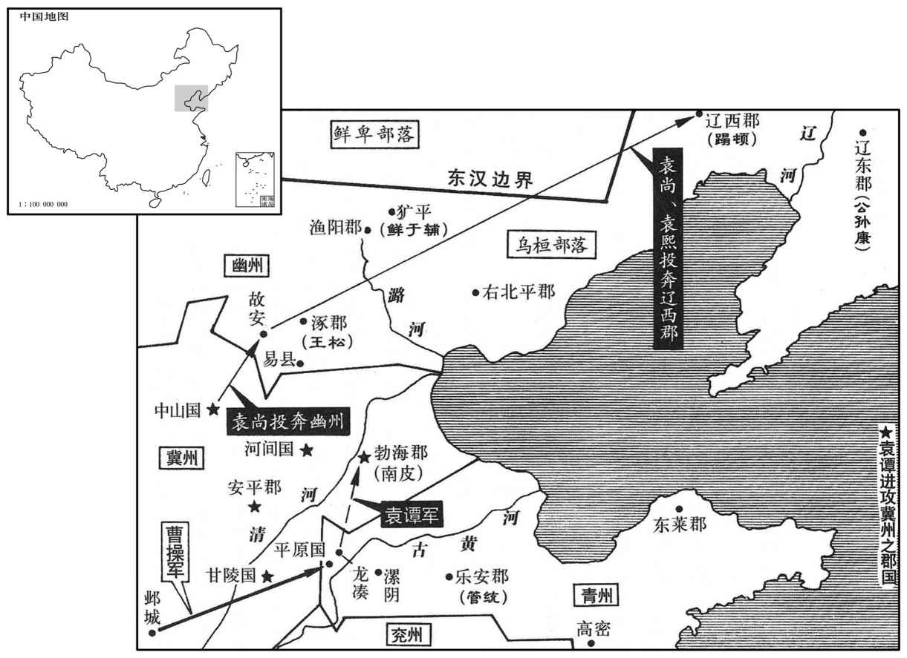

公元204年资治通鉴：本年记事、原文与白话对照
按原书编年位置阅读；追叙和史论不等于本年发生的事件。白话采用所据译本，缺译不以生成译文补齐。
卷64 · 本年记事
公元204年 · 汉孝献皇帝建安九年
九年〔（甲申、二○四）〕
本年事件索引（现代整理）
- 曹操引淇水入白沟，整治运粮水道
- 袁尚围攻袁谭，曹操攻克邯郸并击败袁尚部将
- 韩范、梁岐以县投降，曹操厚赏以示招降
- 曹操引漳水灌邺，城中饥死过半
- 李孚乔装混入邺城，安抚守军后趁夜突围
- 袁尚回师救邺再败，马延、张顗临阵投降
- 辛毗家属遭审配杀害，曹操攻陷邺城并处死审配
- 袁绍曾与曹操谈论各自据守之地
- 曹操受命为冀州牧，随后辞让
- 崔琰劝曹操先救济百姓、勿急于统计兵众
- 许攸居功自傲，曹操表面容忍后将其杀害
- 有星孛于东井
- 高干率并州归降曹操，仍任并州刺史
- 袁谭再度背叛曹操，战败后退守南皮
- 公孙度去世，子公孙康继位
- 牵招说服乌桓峭王拒绝辽东授印，转而服从朝廷
- 妫览、戴员杀孙翊、孙河，图谋拥立刘馥
- 孙翊妻徐氏设谋刺杀妫览、戴员
- 孙权诛除叛乱余党，奖赏孙高、傅婴
- 孙韶守卫京城，孙权试探守军后任其统领旧部

本年形势与背景参考图
春，正月，曹操济河，遏淇水入白沟以通粮道。〔袁尚在邺，操将攻之，故育粮道。班志曰：淇水至黎阳入河。曹操于水口下大枋木以成堰，遏淇水东入白沟。水经注曰：淇水东过内黄县南，为白沟。〕
春季，正月，曹操渡过黄河。曹操派人堵住淇水，使共流入白沟，以便运输军粮。

二月，袁尚复攻袁谭于平原，〔复，扶又翻。〕留其将审配、苏由守邺。曹操进军至洹水，〔水经：洹水出上党泫氏县，东过隆虑县北，又东北出山，径邺县南。洹，于元翻，又音桓。〕苏由欲为内应，谋泄，出奔操。操进至邺，为土山、地道以攻之。尚武安长尹楷毛城，以通上党粮道。〔武安县，属魏郡，唐洛州地。长，知两翻；下同。〕夏，四月，操留曹洪攻邺，自将击楷，破之而还；又击尚将沮鹄于邯郸，拔之。〔裴松之曰：沮，音葅。河朔间，今犹有此姓。鹄，沮授子也。沮，子余翻。邯郸，音寒丹。〕
二月，袁尚又到平原去进攻袁谭，留部将审配、苏由镇守邺城。曹操进军到洹水，苏由打算为曹操作内应，因密谋泄露，苏由就出城投奔曹操。曹操大军到达邺城后，上筑土山，下挖地道，发动进攻。袁尚委任的武安县县长尹楷驻军毛城，以保护通向上党的粮道。夏季，四月，曹操留曹洪继续攻打邺城，亲自统军进攻尹楷，击败尹楷后回师。又去进攻镇守邯郸的袁尚部将沮鹄，攻陷邯郸。
易阳令韩范、涉长梁岐皆举县降。〔易阳县，属赵国。涉县，盖汉末分上党之潞县置。魏后置广平郡，二县皆属焉。北齐废涉县入刈陵县；隋、唐复置涉县。宋白曰：涉县，因县南涉河为名。磁州昭义县理故涉城，永泰元年改名昭义。〕徐晃言于操曰：「二袁未破，诸城未下者倾耳而听，宜旌赏二县以示诸城。」操从之，范、岐皆赐爵关内侯。黑山贼帅张燕遣使求助，操拜平北将军。〔晋志曰：四平止于丧乱时。以河北未平，授以此号。及晋以后，征、镇、安、平，以次进号。帅，所类翻。〕
易阳县县令韩范、涉县县长梁岐都献出县城，投降曹操。徐晃对曹操说：“袁氏兄弟还未被打败，未归降的诸城都在侧耳倾听，应该表彰奖赏这两个县的官员，为那些城作个榜样。”曹操听从了，将韩范、梁岐都封为关内侯。黑山军首领张燕派使者来拜见曹操，请求派军协助曹操进攻袁氏兄弟，曹操委任他为平北将军。
五月，操毁土山、地道，凿堑围城，周回四十里，〔土山、地道，急攻也；知非急攻可拔，故凿堑围城，绝其内外以久困之。堑，七艳翻。〕初令浅，示若可越。配望见，笑之，不出争利。操一夜浚之，广深二丈，〔广，古旷翻；深，悉禁翻；度之广深也。后放此。〕引漳水以灌之；〔水经注：漳水过邺县西，魏武堨以围邺。〕城中饿死者过半。
五月，曹操毁去土山、地道，开凿壕沟，包围邺城，围圈达四十里。最初让挖得很浅，看去好像可以越过。审配在城上看见，放声大笑，没有派兵出来破坏。曹操派人乘夜疏浚，一夜之间，挖成深二丈、宽二丈的深壕，把漳河水引入壕沟，完全断绝了邺城内外的联系。城中人饿死大半。
秋，七月，尚将兵万余人还救邺；未到，欲令审配知外动止，先使主簿巨鹿李孚入城。孚斫问事杖，系着马边，〔问事卒也，主行杖，犹伍伯之类。问事杖，问事所执杖也。着，直略翻。〕自着平上帻，〔帻有颜、题，其频欲摞施巾，连题却覆之。平上帻者，其上平也。晋志引汉注曰：冠惠文者宜短耳，今平上帻也；冠进贤者宜长耳，今介帻也。文吏服介帻，武吏服平上帻。着，陟略翻。〕将三骑，投暮诣邺下；自称都督，历北围，循表而东，〔表，围城所立标表也。骑，奇寄翻。〕步步呵责守围将士，随轻重行其罚。遂历操营前，至南围，当章门，〔邺城有七门，正南曰章门，亦曰中阳门。〕复责怒守围者，收缚之。因开其围，驰到城下，呼城上人，城上人以绳引，孚得入。〔不先经操营前，则守围者必疑，不可得而收缚，围亦不可开矣。孚之来也，其定计固指从章门入也。复，扶又翻；下同。〕配等见孚，悲喜，鼓噪称万岁。守围者以状闻，操笑曰：「此非徒得入也，方且复出。」〔操知其复出，非不欲严为之防也，审孚所以得入之由，服其多智，有不可得而防者也。〕孚知外围益急，不可复冒，乃请配悉出城中老弱以省谷，夜，简别数千人，皆使持白幡，从三门并出降。〔邺城南面三门曰：凤阳门、中阳门、广阳门。简别，彼列翻。降，户江翻；下同。〕孚复将三骑从降人服，随辈夜出，突围得去。
秋季，七月，袁尚率军一万人回救邺城。在未到前，想让审配了解外面的形势，先派主簿、巨鹿人李孚入城。李孚砍下树枝作为责打人的刑杖，系在马旁，自己戴上武官用的头巾，率领三名骑兵，黄昏时到达邺城。李孚自称为都督，从北边进入围城的曹军大营，顺着标志，向东巡查，一路上不断叱责守围的将士，根据违反军中法纪的轻重，分别给予处罚。经过曹操大营前，巡视到城南，对着邺城正南的章门，李孚又大声责骂守围将士，把他们捆绑起来。然后，李孚乘机批开营门，急驰到城下，向城上呼喊，城上的守军放下绳子，把李孚等吊上城去。审配等看见李孚，悲喜交加，高声欢呼“万岁”！守城将士向曹操汇报，曹操笑着说：“这个人不但能进城，还会再出来。”他孚知道外边围困得更紧，不能再假冒曹军出城，就请审配把城中的老弱全都放出城去，以节省粮食。晚上，挑选出老弱数千人，让他们全都手持白旗，从三个城门一同出去向曹军投降。李孚又带领那三个骑兵也打扮成投降人的样子，杂在人群中，乘夜突围而去。
尚兵既至，诸将皆以为：「此归师，人自为战，不如避之。」〔兵法曰：归师勿遏。〕操曰：「尚从大道来，当避之；若循西出来者，此成禽耳。」〔从大道来则人怀救根本，不顾胜败，有必死之志；循山而来，则其战可前可却，人有依险自全之心，无同力致命之意。操所以料尚者如此，兵法所谓「观敌之动」者也。〕尚果循西出来，东至阳平亭，去邺十七里，临滏水为营。〔郡国志：邺有滏水。左思魏都赋曰：北临漳、滏，则冬夏异沼。注云：邺北有滏水，水热，故名滏口。〕夜，举火以示城中，城中亦举火相应。配出兵城北，欲与尚对决围。操逆击之，败还，尚亦破走，依曲漳为营，〔贤曰：漳水之曲也。〕操遂围之。未合，尚惧，遣使求降；操不听，围之益急。尚夜遁，保祁山，〔陈寿魏武纪作「祁山」，袁绍传作「滥口」，范史袁绍传作「蓝口」。贤注曰：相州安阳县界有蓝嵯山，与邺相近，盖蓝山之口。考异曰：魏志绍传云，「还走滥口」，范书作「蓝口」。今从魏武纪。〕操复进围之；〔复，扶又翻。〕尚将马延、张顗等，临陈降，众大溃，尚奔中山。尽收其辎重，〔陈，读曰阵。重，直用翻。〕得尚印绶、节钺及衣物，以示城中，城中崩沮。〔沮，在吕翻。〕审配令士卒曰：「坚守死战！操军疲矣，幽州方至，〔幽州，谓袁熙也。〕何忧无主！」〔配以此安众心，可谓忠勇矣。〕操出行围，〔巡行长围也。行，下更翻。〕配伏弩射之，几中。〔射，而亦翻。几，居希翻。中，竹仲翻。〕
袁尚的援军到达以后，曹军将领们都认为：“这是思归之军，人人都将拼死作战，不如先避开。”曹操说：“袁尚如果从大路来，应当避开；如果沿着西山来，则将被我们击败。”袁尚果然沿着西山向邺城出发，在距邺城十七里的阳平亭，在滏水边扎营。晚上，点火告知城中守军，城中也点火相应。审配率军出城，驻在城北，准备与袁尚内外夹击，冲破曹军的包围。曹操迎击审配，审配抵挡不住，退回城里。袁尚也被曹军击败，退到漳河拐弯处安营。曹操于是包围袁尚营寨，还未安全围住时，袁尚畏惧，派使者向曹操请求投降，曹操拒绝接受，加紧部署包围。袁尚乘夜逃走，退守祁山。曹操又进军包围，袁尚部将马延、张等临阵投降，袁尚全军溃散，袁尚逃往中山。曹军俘获了袁尚的全部辎重，得到袁尚的印绶、节杖、黄钺以及衣物等，拿去给邺城守军看，守军斗志顿时崩溃。审配命令将士们说：“坚守死战！曹操已经疲惫不堪了，袁熙率领的幽州援军就要来到，我们还怕没有人来作主吗！”曹操出营巡视围城部队，审配埋伏强弩射击，几乎射中曹操。
配兄子荣为东门校尉，〔邺城东门曰建春门。七门之名，盖皆石氏所命也。〕八月，戊寅，荣夜开门内操兵。〔内，读曰纳。〕配拒战城中，操兵生获之。辛评家系邺狱，辛毗驰往，欲解之，已悉为配所杀。操兵缚配诣帐下，毗逆以马鞭击其头，骂之曰：「奴，汝今日真死矣！」配顾曰：「狗辈，正由汝曹，破我冀州，恨不得杀汝也；且汝今日能杀生我邪！」〔言杀生由曹操，不由辛毗。〕有顷，操引见，谓配曰：「曩日孤之行围，何弩之多也！」配曰：「犹恨其少！」〔谓射操不中也。少，诗沼翻。〕操曰：「卿忠于袁氏，亦自不得不尔。」意欲活之。配意气壮烈，终无桡辞，〔桡，奴教翻，曲也。〕而辛毗等号哭不已，〔号，户刀翻。〕遂斩之。冀州人张子谦先降，素与配不善，笑谓配曰：「正南，〔审配字正南。〕卿竟何如我﹖」配厉声曰：「汝为降虏，审配为忠臣，虽死，岂羡汝生邪！」临行刑，叱持兵者令北向，曰：「我君在北也。」〔袁绍下士，能尽死以效节者，审配一人而已。我君在北，谓袁尚已北奔也。〕操乃临祀绍墓，器之流涕；慰劳绍妻，还其家人宝物，赐杂缯絮，禀食之。〔劳，力到翻。缯，慈陵翻。食，读曰坔。〕
审配哥哥的儿子审荣为邺城东门校尉。八月，戊寅（初二），审荣乘夜打开城门，放曹军入城。审配在城中抵抗，被曹军生擒。辛评的家眷被关在邺城监狱中，辛毗赶去，打算救护他们，但全家都已被审配下令杀死。曹军士兵把审配绑起来带到大帐，辛毗迎面用马鞭猛抽审配头部，大骂他说：“奴才，你今天死定了！”审配瞪着辛毗说：“狗东西，正是由于你们这些人，冀州才遭到曹军蹂躏，我恨不能亲手杀死你。而且，你今天能决定我的生死吗！”过了一会儿，曹操接见审配，对他说：“那天我巡视围城部队，你怎么有那么多弓弩！”审配说：“我还恨弓弩少！”曹操说：“你效忠于袁氏，也不得不那样做。”有心宽恕审配。但审配意气壮烈，始终不说一句屈服求饶的话，而辛毗等人在旁号哭不止，曹操遂下令杀死审配。冀州人张子谦先投降了曹操，他一向与审配关系不好，笑着对审配说：“审配，你到底比我怎么样？”审配厉声叱责他说：“你是投降的俘虏，而我是忠臣，虽然一死，难道羡慕你活吗！”等到行刑时，审配大声命令刽子手让自己面向北方，说：“ 我的君主在北方。”曹操亲自去袁绍墓前祭祀，痛哭流涕。安慰袁绍的妻子，退还袁家的金银财宝，并赐给绸缎丝绵等，发给生活费用。
初，袁绍与操共起兵，绍问操曰：「若事不辑，则方面何所可据﹖」〔辑，犹集也，集，成也。观绍此言，则起兵之时，固无勤王之心而有割据之志矣。〕操曰：「足下意以为何如﹖」绍曰：「吾南据河，北阻燕、代，兼戎狄之众，南向以争天下，庶可以济乎！」操曰：「吾任天下之智力，以道御之，无所不可。」
起初，袁绍与曹操共同起兵讨伐董卓，袁绍问曹操说：“假如大事不成，有什么地方可以据守？”曹操说：“你的意思如何？”袁绍说：“我南据黄河，北方依靠燕、代地区，召集北方蛮族兵力，向南争夺天下，大概可以成功吧！”曹操说：“我任用天下的贤能智士，加以正确指导，在什么地方都成。”
九月，诏以操领冀州牧；操让还兖州。〔当时政自操出，领则真领，而让非真让也。〕
九月，献帝下诏，任命曹操兼任冀州牧。曹操接受此职后，辞去所兼兖州牧的职务。
初，袁尚遣从事安平牵招至上党督军粮，〔牵，姓；招，名。〕未还，尚走中山，招说高干以并州迎尚，并力观变，〔说，输芮翻。〕干不从。招乃东诣曹操，操复以为冀州从事；又辟崔琰为别驾，操谓琰曰：「昨按户籍，可得三十万众，故为大州也。」琰对曰：「今九州岛幅裂，二袁兄弟亲寻干戈，〔左传，子产曰：昔高辛氏有二子，伯曰阏伯，季曰实沈，居于旷林，不相能也，日寻干戈以相征讨。杜预注曰：寻，用也。〕冀方蒸庶，暴骨原野，未闻王师存问风俗，救其涂炭，而校计甲兵，唯此为先，斯岂鄙州士女所望于明公哉！」操改容谢之。〔此操之所以重崔琰而亦不能不害崔琰也。〕
起初，袁尚派从事、安平人牵招到上党去监督运输军粮，牵招还没有回来，袁尚已逃到中山。牵招劝说并州刺史高干迎接袁尚到并州来，合力以观察局势变化，高干不听。牵招于是到东方投奔曹操，曹操仍任用他为冀州从事。曹操又延聘崔琰为别驾，对崔琰说：“昨天，我翻阅冀州的户籍，可以征召到三十万人，所以是个大州。”崔琰回答说：“如今天下分崩离析，袁氏兄弟自相残杀，冀州的百姓陷于水深火热之中，死尸遍布原野而无人掩埋。如今朝廷大军进驻冀州，没有听到有慰问民间疾苦，拯救百姓的举动，反而先计算兵员的数量，唯独将此放在首位，这岂是敝州百姓对您的期望呢！”曹操改变态度，郑重地向崔琰道歉。
许攸恃功骄嫚，〔乌巢之捷，计出于攸，故恃其功。〕尝于众坐呼操小字曰：「某甲，〔裴松之曰：操一名吉利，小字阿瞒。曰某甲者，史隐其辞。坐，徂卧翻。〕卿非我，不得冀州也！」操笑曰：「汝言是也。」然内不乐，〔乐，音洛。〕后竟杀之。
许攸仗恃功劳，态度傲慢，曾在众人坐在一起的场合中，喊着曹操的小名说：“曹阿瞒，要不是我，你得不到冀州！”曹操笑着说：“你说得对。”但心里感到不高兴，后来竟杀掉了许攸。
冬，十月，有星孛于东井。〔晋天文志：南方东井八星，天之南门，黄道所经，天之亭候，主水衡事，法令所取平也。孛，蒲内翻。〕
冬季，十月，有异星出现在东井星旁。
高干以并州降，操复以干为并州刺史。〔为干复叛张本。降，户江翻。复，扶又翻。〕
高干归降曹操，献出并州，曹操仍任命他为并州刺史。
曹操之围邺也，袁谭复背之，〔复，扶又翻；下同。〕略取甘陵、安平、勃海、河间。攻袁尚于中山，尚败，走故安，〔故安县，属涿郡。贤曰：故城在今易州县南。〕从袁熙；谭悉收其众，还屯龙凑。操与评书，责以负约，与之绝婚，女还，然后进讨。〔袁尚破走，操于是始讨谭。〕十二月，操军其门，谭拔平原，走保南皮，临清河而屯。〔水经：清河过南皮县西。〕操入平原，略定诸县。
曹操围攻邺城时，原已归降曹操的袁谭又背叛曹操，攻取甘陵、安平、勃海、河间。袁谭又进攻据守中山的袁尚，袁尚抵挡不住，败走故安，投奔幽州刺史袁熙。袁谭将袁尚的残部全部收编，回军驻扎龙凑。曹操写信给袁谭，责备他违背誓约，与他断绝婚姻关系，把袁谭女儿送回后，出军讨伐袁谭。十二月，曹军到达其门，袁谭自平原撤出，退守南皮，在清河沿岸布防。曹操进入平原。占领诸县。
曹操表公孙度为武威将军，封永宁乡侯。度曰：「我王辽东，何永宁也！」〔王，于况翻。〕藏印绶于武库。〔辽东郡之武库也。〕是岁，度卒，子康嗣位，以永宁乡侯封其弟恭。
曹操上表推荐公孙度为武威将军，封永宁乡侯。公孙度说：“我已在辽东为王，永宁乡侯算什么？”把曹操派人送来的印绶收藏到武器库中。这一年，公孙度去世，他儿子公孙康继位。公孙康把永宁乡侯的爵位封给自己的弟弟公孙恭。
操以牵招尝为袁氏领乌桓，〔牵，姓；招，名。袁绍先尝辟招为督军从事，兼领乌桓突骑。〕遣诣柳城，抚慰乌桓。值峭王严五千骑欲助袁谭，又，公孙康遣使韩忠假峭王单于印绶。峭王大会群长，〔乌桓部落，各有君长。峭，七笑翻。使，疏吏翻。长，知两翻。〕忠亦在坐。〔坐，才卧翻；下同。〕峭王问招：「昔袁公言受天子之命，假我为单于；今曹公复言当更白天子，假我真单于；辽东复持印绶来。〔复，扶又翻。〕如此，谁当为正﹖」招答曰：「昔袁公承制，得有所拜假；中间违错天子命，〔违，异也，背也。错，乘也。〕曹公代之，言当白天子，更假真单于；〔【章：甲十一行本「于」下有「是也」二字；乙十一行本同。】〕辽东东下郡，何得擅称拜假也！」忠曰：「我辽东在沧海之东，拥兵百余万，又有扶余、濊貊之用，〔濊，音秽。貊，莫百翻。〕当今之势，强者为右，曹操何得独为是也！」招呵忠曰：「曹公允恭明哲，〔孔安国尚书注曰：不道忠信之言为嚣。〕今恃险远，背违王命，〔背，蒲妹翻。〕欲擅拜假，侮弄神器；〔威福，帝王之神器。〕方当屠戮，何敢慢易咎毁大人！」〔大人，谓曹公。易，以豉翻。〕便捉忠头顿筑，拔刀欲斩之。峭王惊怖，〔怖，普布翻。〕徒跣抱招，以救请忠，左右失色。招乃还坐，为峭王等说成败之效，祸福所归；皆下席跪伏，敬受敕教，〔敕，戒也。为，于伪翻。〕便辞辽东之使，罢所严骑。
曹操因牵招曾经受袁绍委任管理乌桓骑兵，因此派他去柳城，安抚乌桓部落。正赶上乌桓峭王动员五千名骑兵，准备去援助袁谭。另外，公孙康也派使者韩忠给峭王送来单于印绶。峭王召集各部落酋长会商，韩忠也在座。峭王问牵招说：“从前，袁绍说奉天子之使，委任我为单于；如今，曹操又说要再上表奏请天子，委任我为真单于；如今，曹操又说要再上表奏请天子，委任我为真单于；而辽东又派人送来单于的印绶。这样，谁应当是真的？”牵招回答说：“从前，袁绍代表天子发号施令，有权封授官爵；后来他违背天子旨意，曹操取代了他，说要奏明天子，重新封你为真单于。辽东不过是一个偏远的小郡，能擅自封授官爵！”韩忠说：“我辽东在沧海之东，拥有雄兵百万，夫馀国以及貊部都听命于我。当今的形势，是强者为首，曹操怎么能唯我独尊！”牵招大声呵斥韩忠说：“曹公以诚信待人，恭谨明智，辅佐天子，讨伐叛逆，安抚顺服，平定全国的混乱。你们辽东上下都顽劣奸诈，嚣张跋扈。如今倚仗地形险要而又远离中原，就背叛朝廷，竟敢擅自封授官爵，侮弄天子，应当处以极刑，怎么敢侮辱诋毁曹公这样的朝中大臣！”牵招上前揪住韩忠的头发，把他的头往地上叩按，抽出佩刀，打算杀死韩忠。峭王又惊又怕，光着脚奔过去，抱住牵招，请牵招饶了韩忠。左右之人，都大惊失色。牵招这才回到座位，为峭王等人分析成败祸福的原因与后果，峭王等酋长们都离开座位，向牵招跪拜，恭敬地接受朝廷命令。峭王等于是把辽东的使臣打发回去，解散了已集结准备援助袁谭的骑兵。
丹阳大都督妫览、郡丞戴员杀太守孙翊。将军孙河屯京城，驰赴宛陵，〔京城，即汉吴郡丹徒县也。孙权自吴徙居之，命曰京城，亦曰京口。余谓此「京」，取尔雅「丘绝高曰京」之义。宛陵，丹阳郡治所。妫览、戴员，盛宪之党也。妫，俱为翻；姓也。舜居妫汭，其后因以为氏。员，音云。〕览、员复杀之；〔复，扶又翻。〕遣入迎扬州刺史刘馥，〔馥，曹操所用也。〕令住历阳，以丹阳应之。〔历阳与丹阳隔江，使馥来屯，以为声援。〕
丹阳郡大都督妫览、郡丞戴员杀死太守孙翊。将军孙河驻在京城，听到消息后赶赴宛陵，又被妫览、戴员杀死。妫览、戴员等派人去迎接朝廷任命的扬州刺史刘馥，让他住在历阳，他们就以丹阳郡归顺朝廷。
览入居军府中，欲逼取翊妻徐氏。徐氏绐之曰：「乞须晦日，〔月终为晦，阴之尽也。绐，荡亥翻。〕设祭除服，然后听命。」览许之。徐氏潜使所亲语翊亲近旧将孙高、傅婴等与共图览，〔语，牛倨翻。〕高、婴涕泣许诺，密呼翊时侍养者二十余人与盟誓合谋。〔侍养，谓侍翊左右，而厚蒙给养者。〕到晦日，设祭。徐氏哭泣尽哀，毕，乃除服，熏香沐浴，言笑欢悦。大小凄怆，〔凄，悲也，痛也。怆，伤也，音初亮翻。〕怪其如此。览密觇，无复疑意。〔觇，丑廉翻，又丑艳翻。复，扶又翻。〕徐氏呼高、婴置户内，使人召览入。徐氏出户拜览，适得一拜，徐大呼：「二君可起！」〔呼，火故翻。〕高、婴俱出，共杀览，余人即就外杀员。徐氏乃还缞绖，〔复着缞绖也。缞，仓回翻。〕奉览、员首以祭翊墓，举军震骇。
妫览迁到原先孙翊居住的府第中，打算强迫孙翊的妻子徐氏嫁给自己。徐氏骗他说：“请您等到这个月底，我祭奠丈夫、脱去丧服之后，再听从您的命令。”妫览同意了。徐氏暗中派人与孙翊原来的亲近部将孙高、傅婴等策划共除妫览、戴员。孙高、傅婴流着泪许诺，他们秘密找来孙翊原先的侍卫武士二十余人，共同盟誓，作好安排。到月底，徐氏摆设香案，祭奠亡夫，尽情痛哭。祭奠完毕后，就脱下丧服，熏香洗澡，言谈笑语十分欢悦。郡府上下的人们，心中都深为悲痛，怪徐氏不该这样。妫览派人秘密观察后，不再怀疑。徐氏把孙高、傅婴安排在自己房中，然后派人去请妫览进来。徐氏出门拜见妫览，中拜了一拜，徐氏大叫：“两位将军，可以动手了！”孙高、傅婴一起出来，共同杀死了妫览，其余的人立即在外边杀死戴员。徐氏于是又换上丧服，用妫览、戴员的人头，祭奠孙翊。全军无不震骇。
孙权闻乱，从椒丘还。〔椒丘，在豫章。〕至丹阳，悉族诛览、员余党，擢高、婴为牙门，〔牙门，将也。〕其余赏赐有差。
孙权听到变乱的消息，立即从椒丘回军，到丹阳后，把妫览、戴员余党的全家老小以及亲属统统杀死。提拨孙高、傅婴为牙门，其他有功人员，也都受到不同的党赐。
河子韶，年十七，牧何余众屯京城。权引军归吴，夜至京城下营，试攻惊之；兵皆乘城，传檄备警，讙声动也，〔讙，许元翻。〕颇射外人。权使晓喻，乃止。明日见韶，拜承烈校尉，统河部曲。〔史言孙权能用人以保江东。射，而亦翻。〕
孙河的儿子孙韶，年仅十七岁，收集孙河的余部守卫京城。孙权率军返回吴郡，晚上到达京城城下安营。孙权为了考察孙韶的能力，假装攻城来惊吓他。孙韶的军队全都登城防守，传递号令，戒备森严，呼声动地，箭矢纷纷向外射出。孙权派人说明情况，城上才停止。第二天，孙权接见孙韶，委任他为承烈校尉，统率孙河的部曲。